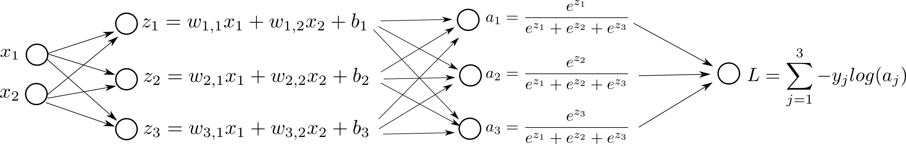

Part 2: Softmax Regression [Draft]
Introduction
Let's say we want to build a model to discriminate the following red, blue and green points in 2-dimensional space:
import numpy as np
import matplotlib.pyplot as plt
X = np.array([[-0.1, -0.5, 1.3, -0.6, -1.5, 0.2, -0.3, 0.7, 1.1, -1.0,
-0.5, -1.3, -1.4, -0.9, 0.4 , -0.4, 0.3, -1.6, -0.5, -1.0],
[1.4, -0.1, 0.9, 0.4, 0.4, 0.2, -0.4, -0.8, -1.5, 0.9,
1.5, -0.45, -1.2, -0.7, -1.3, 0.6, -0.5, -0.7, -1.4, -1.4]])
Y = np.array([[0, 0, 1, 0, 2, 1, 1, 1, 1, 0, 0, 2, 2, 2, 1, 0, 1, 2, 2, 2]])
colormap = np.array(['r', 'b', 'g'])
def plot_scatter(X, Y, colormap, path):
plt.grid()
plt.xlim([-2.0, 2.0])
plt.ylim([-2.0, 2.0])
plt.xlabel('$x_1$', size=20)
plt.ylabel('$x_2$', size=20)
plt.title('Input 2D points', size=18)
plt.scatter(X[0], X[1], s=50, c=colormap[Y[0]])
plt.savefig(path)
plot_scatter(X, Y, colormap, 'image.png')
plt.close()
plt.clf()
plt.cla()

In other words, given a point, $(x_1, x_2)$, we want to output either red, blue or green.
We can use Softmax Regression for this problem. We first learn weights ($w_{1,1}, w_{1,2}, w_{2,1}, w_{2,2}, w_{3,1}, w_{3,2}$) and bias ($b_1, b_2, b_3$). This phase is called training. Then we use the following formula to predict if the new point is red, blue or green. This phase is called prediction or inference.
One hot vector representation
We represent the output as a one hot vector. In other words, we represent red points using $\begin{bmatrix} 1 \\ 0 \\ 0 \end{bmatrix}$ and similarly for blue points using $\begin{bmatrix} 0 \\ 1 \\ 0 \end{bmatrix}$ and lastly for green points using $\begin{bmatrix} 0 \\ 0 \\ 1 \end{bmatrix}$.
Computation Graph
Here is a visual representation of our model:

and simply pick the biggest $a_i$ to do the final prediction.
We use sigmoid function as $g(z)$:
$$ g(z) = \frac{1}{1+e^{-z}} $$Maximum Likelihood Estimation
In training, our goal is to learn a matrix $W$ of size $(3 \times 2)$ and a $b$ of size $(3 \times 1)$ that best discriminates red, blue and green points.
We want to find $W$ and $b$ that minimizes some definition of a cost function. Let's attempt to write a cost function for this problem.
Let's say we have three points:
$$x = \begin{bmatrix} -0.1 \\ 1.4 \end{bmatrix}, y=0$$ $$x = \begin{bmatrix} 1.3 \\ 0.9 \end{bmatrix}, y=1$$and similarly,
$$x = \begin{bmatrix} -1.4 \\ -1.1 \end{bmatrix}, y=2$$Now, let's list these $y$ as a one hot vector and, their corresponding $a$ values:
$$y = \begin{bmatrix} 1 \\ 0 \\ 0 \end{bmatrix}, a = \begin{bmatrix} 0.9 \\ 0.1 \\ 0.0 \end{bmatrix} $$ $$y = \begin{bmatrix} 0 \\ 1 \\ 0 \end{bmatrix}, a = \begin{bmatrix} 0.1 \\ 0.8 \\ 0.1 \end{bmatrix} $$ $$y = \begin{bmatrix} 0 \\ 0 \\ 1 \end{bmatrix}, a = \begin{bmatrix} 0.1 \\ 0.2 \\ 0.7 \end{bmatrix} $$Intuitively, we want a classifier that produces similar looking $a$ and $y$. This means, if $y = \begin{bmatrix} 1 \\ 0 \\ 0 \end{bmatrix}$, then, for example, having $a = \begin{bmatrix} 0.8 \\ 0.1 \\ 0.1 \end{bmatrix}$ is more desirable than having $a = \begin{bmatrix} 0.6 \\ 0.2 \\ 0.2 \end{bmatrix}$.
In other words, we want to maximize:
$$P(y|x) = \prod_{j=1}^{3} {a_j^{y_j} (1-a_j)^{(1-y_j)} }$$Here, $a_j$ represents the jth item in the vector $a$, and similarly $y_j$ represents the jth value in $y$. For example, when $a = \begin{bmatrix} 0.9 \\ 0.1 \\ 0.0 \end{bmatrix}$, then, $a_1 = 0.9, a_2 = 0.1$ and $a_3 = 0.0$.
$$y = \begin{bmatrix} 1 \\ 0 \\ 0 \end{bmatrix}, a = \begin{bmatrix} 0.9 \\ 0.1 \\ 0.0 \end{bmatrix}, P(y|x) = 0.9 \times 0.9 \times 1.0 = 0.810 $$ $$y = \begin{bmatrix} 0 \\ 1 \\ 0 \end{bmatrix}, a = \begin{bmatrix} 0.1 \\ 0.8 \\ 0.1 \end{bmatrix}, P(y|x) = 0.9 \times 0.8 \times 0.9 = 0.648 $$ $$y = \begin{bmatrix} 0 \\ 0 \\ 1 \end{bmatrix}, a = \begin{bmatrix} 0.1 \\ 0.2 \\ 0.7 \end{bmatrix}, P(y|x) = 0.9 \times 0.8 \times 0.7 = 0.504 $$Bigger the $P(y|x)$ is the better.
Similar to Logistic Regression, in order to define the loss for multiple samples, we will simply multiply each value for each sample (Maximum Likelihood Estimation):
$$J = \prod_{i=1}^{M} P(y^{(i)}|x^{(i)}) $$here, $y^{(i)}$, $x^{(i)}$ and $a^{(i)}$ corresponds to ith sample in the training set out of $M$ training samples. We can rewrite it as:
$$J = \prod_{i=1}^{M} \prod_{j=1}^{3} (a_j^{(i)}) ^ {y_j^{(i)}} (1-a_j^{(i)})^{(1-y_j^{(i)})} $$Maximizing above is equal to maximizing:
$$J = log \left( \prod_{i=1}^{M} \prod_{j=1}^{3} (a_j^{(i)}) ^ {y_j^{(i)}} (1-a_j^{(i)})^{(1-y_j^{(i)})} \right ) $$with more math:
$$J = \sum_{i=1}^{M} \sum_{j=1}^{3} y_j^{(i)} log(a_j^{(i)}) (1-y_j^{(i)}) log(1-a_j^{(i)}) $$since we like to minimize things instead of maximizing:
$$J = - \sum_{i=1}^{M} \sum_{j=1}^{3} y_j^{(i)} log(a_j^{(i)}) (1-y_j^{(i)}) log(1-a_j^{(i)}) $$If we add our Log Loss to our computation graph:
Gradient Descent
Let's see what happens if we change $w_{2, 1}$ in the network, step by step:

In order to do gradient descent, we need the derivatives:
$$ \frac{dL}{dw_{m,n}} = \sum_{i=1}^3 \left (\frac{dL}{da_i} \right) \left (\frac{da_i}{dz'_m} \right) \left (\frac{dz'_m}{dz_m} \right ) \left(\frac{dz_m}{dw_{m,n}} \right ), \quad \frac{dL}{db} = \sum_{i=1}^3 \left (\frac{dL}{da_i} \right) \left (\frac{da_i}{dz'_m} \right) \left (\frac{dz'_m}{dz_m} \right ) \left(\frac{dz_m}{b_m} \right ) $$
Let's do some calculus:


Derivative of Softmax Function
The Softmax function takes an N-dimensional vector of real values and returns a new N-dimensional vector that sums up to $1$. The exact formula is (Softmax equation):
\begin{equation} \label{eq:softmax} a_i = \frac{e^{z'_i}}{\sum_{j=1}^N e^{z'_j}} \end{equation}
Let's make an example:
def softmax(a):
return np.exp(a) / np.sum(np.exp(a))
a = np.array([1.0, 2.0, 3.0])
print a
print softmax(a)
[ 1. 2. 3.] [ 0.09003057 0.24472847 0.66524096]
Intuitively, softmax increases/emphasizes the relative difference between large and small values.
A nice property about the Softmax function that it produces a legit Probability Distrubition. In classification (or more generally in Machine Learning) we often want to assign prababilities to categories or classes. Softmax function is known to work well numereous applications/areas.
Softmax is a vector function -- it takes a vector as an input and returns another vector. Therefore, we cannot just ask for the derivative of softmax, we can only ask the derivative of softmax regarding particular elements.
For example,
$$ \frac{d}{d z'_2} a_1 $$refers to how much $a_1$ will change if play with $z'_2$.
Using the same logic for each element for $a_i$ and $z'_j$ would produce us $N \times N$ matrix of derivatives.
Let's try to take derivative for one particular element:
$$ \frac{d}{d z'_m} a_i = \frac{d}{d z'_m} \frac{e^{z'_i}}{\sum_{j=1}^N e^{z'_j}} $$We can use Quotient Rule here. Recall that:
$$ \frac{d}{dx} \frac{f(x)}{g(x)} = \frac{f'(x)g(x) - g'(x)f(x)}{ [g(x)]^2 } $$In our case:
$$ f(x) = e^{z'_i}, \quad g(x) = \sum_{j=1}^N e^{z'_j} $$Let's apply Quotient Rule, if $m=n$:
$$ \frac{d}{d z'_m} a_i = \frac{d}{d z'_m} \frac{e^{z_i}}{\sum_{j=1}^N e^{z'_j}} = \frac{ (e^{z_m})' \sum_{j=1}^N e^{z_j} - (\sum_{j=1}^N e^{z_j})' e^{z_m} }{ [\sum_{j=1}^N e^{z_j}] ^ 2 } = \frac{ e^{z_m} \sum_{j=1}^N e^{z_j} - e^{z_m} e^{z_n} }{ [\sum_{j=1}^N e^{z_j}] ^ 2 } = \frac{ e^{z_m} } { \sum_{j=1}^N e^{z_j} } \frac{ \sum_{j=1}^N - e^{z_n} } { \sum_{j=1}^N e^{z_j} } = (a_m)(1-a_n) $$Notice that we simplify, by plugging $a_i$ (see Equation \ref{eq:softmax}) in the last step above.
Similarly, if $m \neq n$:
$$ \frac{d}{d z_n} a_m = \frac{d}{d z_n} \frac{e^{z_m}}{\sum_{j=1}^N e^{z_j}} = \frac{ (e^{z_m})' \sum_{j=1}^N e^{z_j} - (\sum_{j=1}^N e^{z_j})' e^{z_m} }{ [\sum_{j=1}^N e^{z_j}] ^ 2 } = \frac{ 0 - e^{z_m} e^{z_n} }{ [\sum_{j=1}^N e^{z_j}] ^ 2 } = -\frac{ e^{z_m} } { \sum_{j=1}^N e^{z_j} } \frac{ e^{z_n} }{ \sum_{j=1}^N e^{z_j} } = - (a_m) (a_n) $$More succintly, we can summarize all above:
$$ \frac{d}{d z_n} a_m = \begin{cases} (a_m)(1-a_n), & \text{if}\ \quad m = n \\ - (a_m) (a_n), & \text{if}\ \quad m \neq n \end{cases} $$We know the derivative of sigmoid function from the previous lecture:
$$ \frac{dz'}{dz} = g(z)(1-g(z)) $$Similarly, we also calculated (and easy to see):
$$ \frac{dz}{dw_{m,n}} = x_n, \quad \frac{dz}{db_i} = 1 $$Now, let's combine these:
References
- http://ufldl.stanford.edu/tutorial/supervised/SoftmaxRegression/
- https://eli.thegreenplace.net/2016/the-softmax-function-and-its-derivative/
- http://tutorial.math.lamar.edu/Classes/CalcI/ProductQuotientRule.aspx